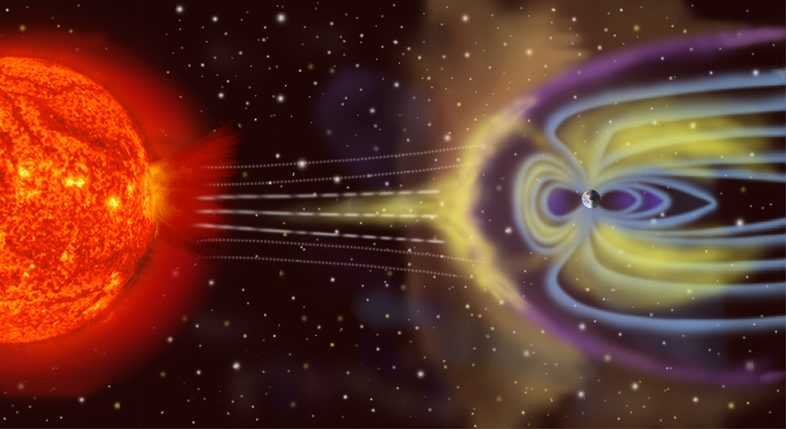
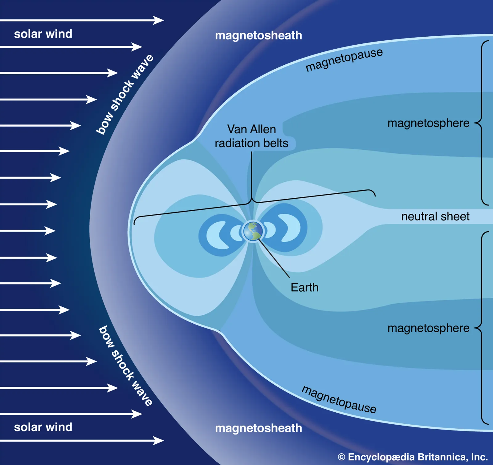

2 Einführung
Diese Einführung beruht zum großen Teil auf dem Buch von Kertz (1971). Dort werden grundlegende Zusammenhänge zur Physik der Hochatmosphäre physikalisch und mathematisch gut aufbereitet und erläutet. Zum Selbststudium ist dieses Buch sehr zu empfehlen.


2.1 Motivation
In der Physik der Ionosphäre und Magnetosphäre behandeln wir Prozesse im erdnahen Raum. Dort werden physikalische Vorgänge durch das Erdmagnetfeld oder seine Interaktion mit dem interplanetaren Magnetfeld bestimmt.
Eine besondere Rolle spielen hier geladene Teilchen. Wir werden sehen, dass der erdnahe Raum nicht wirklich leer ist, sondern aus einem stark verdünnten Gas aus geladenen und neutralen Teilchen besteht. Die Annahme, dass im Universum Vakuum herrscht, ist falsch. Neben der elektromagnetischen Wellenstrahlung der Sonne beobachtet man auch einen Partikelstrom aus geladenen Teilchen. Dieses Teilchengemisch wird Plasma genannt.
In unserem Sonnensystem findet wir Plasma beispielsweise im Sonnenwind, der als ständiger Strom geladener Teilchen mit Geschwindigkeiten von etwa 400 bis 600 km/s die Sonnenoberfläche verlässt.
Gelangt der Sonnenwind in den Wirkungsbereich der Magnetosphäre, werden die geladenen Teilchen des Plasmas einer Kraft ausgesetzt, die durch das irdische Magnetfeld hervorgerufen wird. Diese Kraft ist die Lorentzkraft.
Andererseits bringt die elektromagnetische Wellenstrahlung der Sonne Energie in die Atmosphäre ein und führt zu einer höhenabhängigen Ionisierung der Atmosphäre. Die Ionenproduktionsrate ist in der Dynamoschicht besonders hoch. Dort besitzt die hohe Atmosphäre eine beachtliche elektrische Leitfähigkeit. Dort bilden sich großräumige elektrische Stromsysteme.
Die an diese Stromsysteme gekoppelten Magnetfelder können an der Erdoberfläche gemessen werden. Da sie zeitlich variabel und großräumig sind, eignen sich die Variationen als Energiequelle für die Magnetotellurik. Andererseits führen Magnetfeldvariationen zu unerwünschten Störeffekten bei geomagnetischen Messungen. Diese werden durch Variometer erfasst und durch eine Variationskorrektur aus den Messungen eliminiert.
Stromsysteme sind immer an bewegte Teilchenpopulationen geknüpft. Diese können auch in der Magnetosphäre auftreten und bilden die Van-Allen-Gürtel. Eine kurzzeitige Erhöhung der Teilchendichte in der Magnetosphäre, vor allem durch Koronale Massenauswürfe auf der Sonnenoberfläche (engl. coronal mass ejection, CME), führt zur Ausbildung von mehreren Stunden bis Tagen andauernden verstärkten Ringströmen von einigen Erdradien Durchmesser, deren messbare magnetische Wirkung als magnetischer Sturm bezeichnet wird.
2.2 Plasma
Unser Universum besteht zu 68 % aus dunkler Energie, zu 27 % aus dunkler Materie und zu 5 % aus gewöhnlicher Materie (Atomen) (NASA Science).
Die gewöhnliche –sichtbare– Materie besteht zu über 99.9 % aus Plasma.